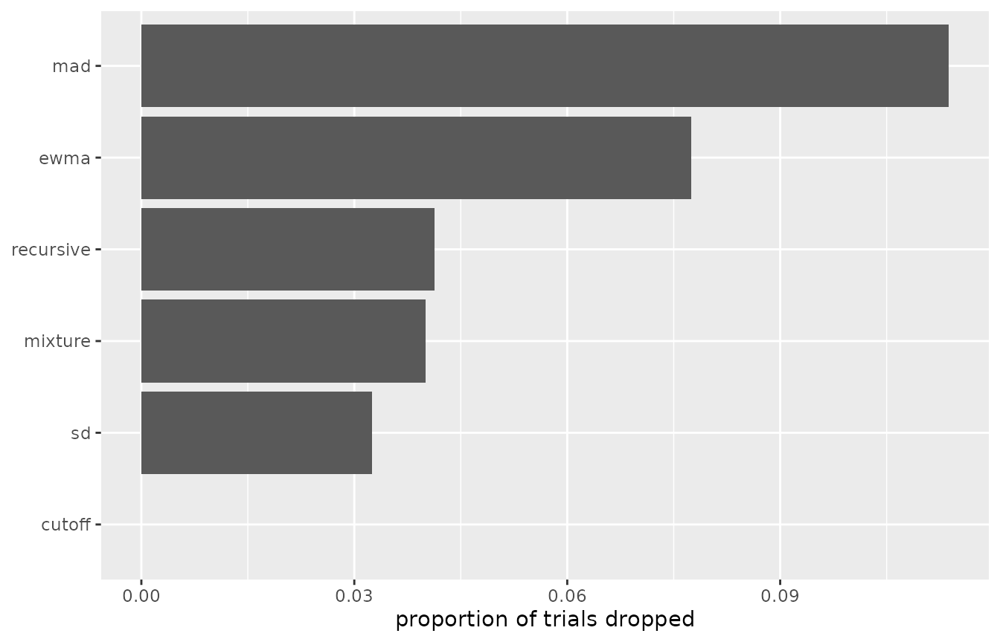
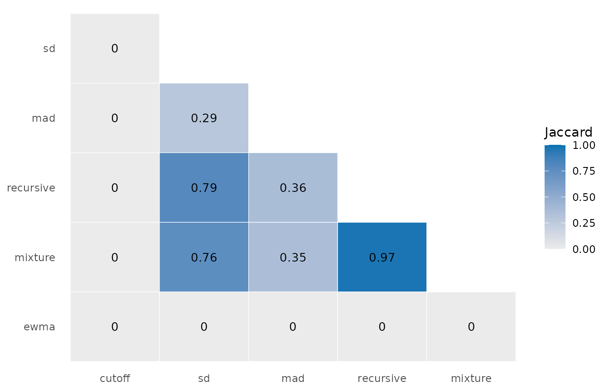

Comparing rules: what a different choice would have removed
Source:vignettes/articles/comparing-rules.Rmd
comparing-rules.RmdThe question rtprep exists to make askable is what a
different preprocessing choice would have removed. It is normally
unanswerable because every implementation returns a different shape: a
trimmed data frame here, a vector of probabilities there, a set of
summary statistics somewhere else. With one return shape the comparison
is one call, and this article is about that call: what
screen_compare() returns, which of its two agreement
measures answers which question, how to see what each rule removed and
why, and how to tabulate the roster’s settings and realised drop rates
from the result object.
One call, several tables
screen_compare() takes a named list of rules and applies
each one with the same grouping, policy, and threshold. The get-started
vignette runs a five-rule roster; this one adds the accuracy chart,
which needs response, and uses the lognormal mixture:
roster <- list(
cutoff = rule_cutoff(0.18, 3),
sd = rule_sd(2.5),
mad = rule_mad(2.5),
recursive = rule_recursive("modified"),
mixture = rule_mixture("lognormal"),
ewma = rule_ewma()
)
cmp <- screen_compare(
rt_example$rt, roster,
response = rt_example$response,
.by = list(rt_example$id, rt_example$condition)
)
cmp
#> <rtprep comparison> 800 trials, 6 rules
#>
#> cutoff dropped 0.0%
#> sd dropped 3.2%
#> mad dropped 11.4%
#> recursive dropped 4.1%
#> mixture dropped 4.0%
#> ewma dropped 7.8%
#>
#> least agreement: mad vs ewma, 80.9% of decisions (Jaccard 0.00)The print method gives the overall drop rate per rule and the pair that agrees least. Behind it sit three matrices with one row per trial and one column per rule, and three tables:
names(cmp)
#> [1] "keep" "prob" "reason" "drops" "agreement" "fits"
#> [7] "n_trials" "rules" "call"
dim(cmp$keep)
#> [1] 800 6keep, prob, and reason are the
per-trial columns of rt_screen() stacked side by side;
drops counts what each rule removed per group, with a
column per reason; agreement compares every pair;
fits stacks each rule’s per-group diagnostics with a
.rule column. summary(cmp) prints the drops
and the agreement in full.
Agreement and Jaccard answer different questions
cmp$agreement
#> rule_x rule_y agree jaccard n_only_x n_only_y n_both
#> 1 cutoff sd 0.96750 0.0000000 0 26 0
#> 2 cutoff mad 0.88625 0.0000000 0 91 0
#> 3 cutoff recursive 0.95875 0.0000000 0 33 0
#> 4 cutoff mixture 0.96000 0.0000000 0 32 0
#> 5 cutoff ewma 0.92250 0.0000000 0 62 0
#> 6 sd mad 0.91875 0.2857143 0 65 26
#> 7 sd recursive 0.99125 0.7878788 0 7 26
#> 8 sd mixture 0.99000 0.7575758 1 7 25
#> 9 sd ewma 0.89000 0.0000000 26 62 0
#> 10 mad recursive 0.92750 0.3626374 58 0 33
#> 11 mad mixture 0.92625 0.3516484 59 0 32
#> 12 mad ewma 0.80875 0.0000000 91 62 0
#> 13 recursive mixture 0.99875 0.9696970 1 0 32
#> 14 recursive ewma 0.88125 0.0000000 33 62 0
#> 15 mixture ewma 0.88250 0.0000000 32 62 0agree is the share of trials on which two rules made the
same decision. jaccard is the overlap of the two sets of
removed trials: the size of their intersection over the size of their
union. The two diverge exactly where it matters, and a constructed pair
shows the extreme. On one cell, a cutoff that removes only the fastest
2% and a cutoff that removes only the slowest 2% never remove the same
trial:
p3_hard <- rt_example |>
filter(id == "p3", condition == "hard")
edges <- screen_compare(
p3_hard$rt,
list(
fast_only = rule_cutoff(min = quantile(p3_hard$rt, 0.02)),
slow_only = rule_cutoff(max = quantile(p3_hard$rt, 0.98))
)
)
edges$agreement
#> rule_x rule_y agree jaccard n_only_x n_only_y n_both
#> 1 fast_only slow_only 0.96 0 2 2 0They agree on 96% of decisions and overlap not at all. Agreement alone would call them interchangeable, and in the roster above the same thing happens to every pair that includes the chart: it agrees with the other rules on 81% of decisions or more and shares no removed trial with any of them, because it cuts from below and the rest cut from above. The other reading is the recursive criterion against the mixture, which agree on 99.9% of decisions and overlap at 0.97: two rules from different families that removed almost the same trials.
One more case is deliberate. When neither rule removed anything there
is no overlap to compute, and jaccard is NA
rather than 1, because calling an empty comparison a perfect match would
make it look like agreement:
screen_compare(
p3_hard$rt,
list(wide = rule_cutoff(0.1, 5), none = rule_none())
)$agreement
#> rule_x rule_y agree jaccard n_only_x n_only_y n_both
#> 1 wide none 1 NA 0 0 0What each rule removed, and why
The drops table has one row per rule and group, and a
column for every reason any rule gave. Summing over groups shows the
composition of each rule’s removals:
cmp$drops |>
summarise(
across(c(n_dropped, too_fast, too_slow, contaminant), sum),
.by = .rule
)
#> .rule n_dropped too_fast too_slow contaminant
#> 1 cutoff 0 0 0 0
#> 2 sd 26 0 26 0
#> 3 mad 91 0 91 0
#> 4 recursive 33 0 33 0
#> 5 mixture 32 0 0 32
#> 6 ewma 62 62 0 0The SD and MAD criteria and the recursive criterion removed nothing
but slow trials, and the cutoff removed nothing at all. The chart
removed nothing but fast ones. The mixture’s reason is
"contaminant", because a posterior has no side. Those are
three different bets about where the contamination sits, and the table
shows which one a rule made without the truth being consulted. Per group
the drops vary more than the totals suggest; the chart’s rate runs from
2% to 22% across the eight cells, which is its lag showing per
participant.
The plot
The plot method draws the drop rates and returns a ggplot when ggplot2 is installed, with a base-graphics fallback when it is not, so the usual additions apply:
plot(cmp) +
labs(title = "Proportion of trials each rule removed") +
theme_minimal()
#> NULLThe agreement table draws as a tile plot of the Jaccard overlap, which makes the two clusters visible at once: the rules that cut from above overlap with each other and with nothing else.
cmp$agreement |>
mutate(
rule_x = factor(rule_x, levels = names(roster)),
rule_y = factor(rule_y, levels = rev(names(roster)))
) |>
ggplot(aes(rule_x, rule_y, fill = jaccard)) +
geom_tile(colour = "white") +
geom_text(aes(label = round(jaccard, 2)), size = 3.5) +
scale_fill_gradient(low = "grey92", high = okabe_ito[1], limits = c(0, 1)) +
labs(x = NULL, y = NULL, fill = "Jaccard") +
theme_minimal() +
theme(panel.grid = element_blank())
The threshold is part of the pipeline
policy and threshold are forwarded to every
rule, and for the mixture they change what is removed. The same
lognormal mixture at three thresholds:
vapply(c(0.3, 0.5, 0.7), function(th) {
sum(!screen_compare(
rt_example$rt, list(mixture = rule_mixture("lognormal")),
.by = list(rt_example$id, rt_example$condition), threshold = th
)$keep)
}, numeric(1)) |>
setNames(c("0.3", "0.5", "0.7"))
#> 0.3 0.5 0.7
#> 28 32 38The deterministic rules are unaffected, because their
.prob is 0 or 1 and every threshold strictly between falls
on the same side.
With ground truth: score every rule at once
Everything above is available on real data. rt_example
also carries the truth, and because keep is a matrix,
scoring every rule is one line for sensitivity and one for
specificity:
contaminant <- rt_example$contaminant
round(colMeans(!cmp$keep[contaminant, ]), 2)
#> cutoff sd mad recursive mixture ewma
#> 0.00 0.25 0.33 0.30 0.30 0.17
round(colMeans(cmp$keep[!contaminant, ]), 3)
#> cutoff sd mad recursive mixture ewma
#> 1.000 0.985 0.904 0.980 0.981 0.930The most aggressive rule finds the most contaminants and pays the most genuine trials for them; the cutoff finds nothing because nothing in this fast task reaches its bounds. The ground-truth article shows the same scoring on data matched to your own task.
The roster as a table
The comparison object carries what it was given:
cmp$rules holds the rule objects, each with its
label, and a column mean of !cmp$keep is the
realised drop rate per rule. Together they give one row per
pipeline:
tibble(
pipeline = names(cmp$rules),
setting = vapply(cmp$rules, function(r) r$label, character(1)),
prop_dropped = colMeans(!cmp$keep)
)
#> # A tibble: 6 × 3
#> pipeline setting prop_dropped
#> <chr> <chr> <dbl>
#> 1 cutoff cutoff(0.18, 3) 0
#> 2 sd sd(2.5, mean, sd) 0.0325
#> 3 mad sd(2.5, median, mad) 0.114
#> 4 recursive recursive(modified) 0.0412
#> 5 mixture mixture(lognormal) 0.04
#> 6 ewma ewma(0.01, 1.5) 0.0775Applying each column of keep to what comes next repeats
the downstream analysis per pipeline: filter with a column, aggregate,
estimate, and repeat. The aggregation
article carries one such table through to drift estimates, and the ground-truth article adds the column a
real data set never has, which is how far each pipeline sits from the
truth.